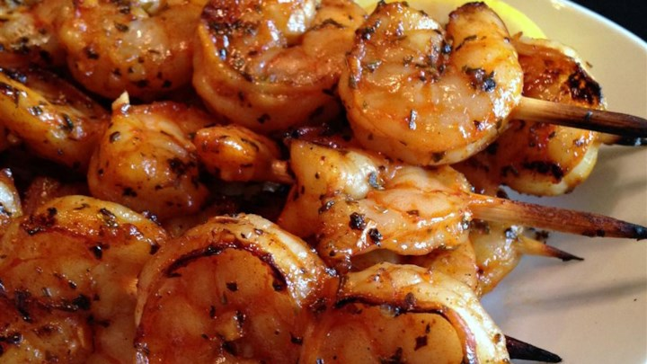

>>> Grilled Garlic and Herb Shrimp <<<
Ingredients
- 2 teaspoons ground paprika
- 2 tablespoons fresh minced garlic
- 2 teaspoons Italian seasoning blend
- 2 tablespoons fresh lemon juice
- 1/4 cup olive oil
- 1/2 teaspoon ground black pepper
- 2 teaspoons dried basil leaves
- 2 tablespoons brown sugar, packed
- 2 pounds large shrimp (21-25 per pound), peeled and deveined
Directions
- Whisk the paprika, garlic, Italian seasoning, lemon juice, olive oil,
pepper, basil, and brown sugar together in a bowl until thoroughly blended.
Stir in the shrimp, and toss to evenly coat with the marinade.
Cover and refrigerate at least 2 hours, turning once.
- Preheat an outdoor grill for medium-high heat. Lightly oil grill grate,
and place about 4 inches from heat source.
- Remove shrimp from marinade, drain excess, and discard marinade.
- Place shrimp on preheated grill and cook, turning once, until opaque
in the center, 5 to 6 minutes. Serve immediately.
